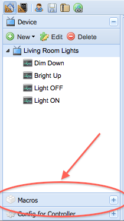
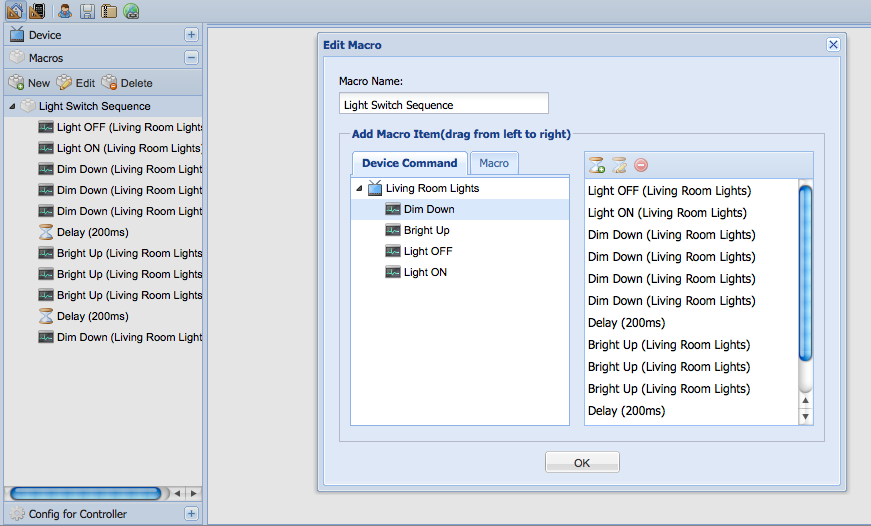

|
This page last changed on Oct 29, 2010 by mippen.
I'm new to the forum and might have been missing the information...
I have managed to setup the Controller on Win7, having a Android Phone talking to the system.
I also managed to create a button in the Designer and the Android Phone picks up the changes in the gui.
Now I would like to control the KNX network.
My interface to the network is a RS232 interface.
Is there any information on how I setup the Controller soft to talk over the PC COM port accessing the KNX system?
/Best Regards
Michael
|
Hi Michael,
Unfortunately KNX over RS232 interface is not supported yet.

Posted by juha at Oct 30, 2010 00:18
|
|
Hi Juha and thanks for a quick reply!
Is there any plans on developing other (RS232 in my case) communication ports against KNX?
Is there anything that I could do to help the developing of a RS232 link?
Really loves the idea behind the system.
It isn't that easy to grab but when you do manage to get started playing with panels it's a great tool.
Is there functions to create "logic" states for the Controller in the Designer?
For example it would be great to create a "wakeup" button that does a couple of tasks.
Alot of questions and think I should make some more reading....
/best regards
Michael
Posted by mippen at Oct 30, 2010 08:42
|
|
If you can code in java you are welcome to try and add support for rs232. Yes you can group tasks in macros in designer. You mention the system is 'hard to grab' can you expand? What would have helped you.
Posted by marcf at Oct 30, 2010 09:02
|
|
Hi
As I'm not a programmer I think it's a little bit high treshold to start coding.
I will try to get an enviroment going compiling the work. Think there was a tutorial on getting the enviroment going?
On thing that I have problems with understanding is how the commands and buttons connects to each other in the designer. In one place you create the tasks, in an other place you specify your items in the network and then in a third place you make a visual design connecting everything.
For me it would be clearer if I could create my Items in one page.
For example.
Item 1 = Kitchen main light. Has adress xx/xx/xx and can be control by on/off (no dimmer in this case)
Then in a other view you create a button... Connect it the the Item 1 and see what functions is available.
I think it's the creation of the functions (ON = Status on) that is a little bit unclear in the designer.
Also I have difficulty understanding how the connection between loading my design settings into the controller works.. Should the "server" be on / off when I download... How long time does it take to download the setup.. what does "reload configuration" do..
I will do some more playing around with the designer and see if I get more understanding in the layout. The DPT was one thing that I thought was item adress for example.
Posted by mippen at Oct 30, 2010 09:34
|
Is there any plans on developing other (RS232 in my case) communication ports against KNX?
At the moment all focus has been on KNX IP gateways, so no firm plans for KNX over RS-232 at the moment. It has been low on the radar with not many (although occasional) requests for it so far.
I don't really have the resources for it right now, so to get it done I'm expecting someone from the community to pick it up. As usual, would be happy to lend a helping hand to outline what is required for implementation and integration to OpenRemote.
So, on hold right now but would like to see it added too.
Is there functions to create "logic" states for the Controller in the Designer?
For example it would be great to create a "wakeup" button that does a couple of tasks.
Yes, this can be accomplished with macros.


Posted by juha at Oct 30, 2010 12:00
|
|
Michael,
thanks for the feedback.
1/ If you are not a programmer, then don't waste your time with the compilation and dealing with KNX. It will be a hell of a steep curve to get going and a waste of your time. Unfortunately that means you will probably be stuck with your RS connection. If you can get a IP gateway, I recommend you go ahead and do that.
2/ Ironically, the flow as you describe it is actually how the application is built. First you declare your "devices". In the case of KNX you say "kitchen light with address bla bla bla". Then you can go to the panel assembly page where you can use the buttons associated with the devices. Try it you will see it is all there. The problem is in the narrative, I actually wrote a narrative for how to use "designer". First declare, second assemble etc. I am starting to think that a better way to approach this is to recast the javascript application as a web page driven application. As is, the application is a traditional app where you have to know the steps you need to take to make it work for you. In that sense web application can be better than traditional application because the narrative is in the flow of pages and you are hand-held.
3/ For the controller "loading" it is done for you. All you have to do is start the controller, access it's page and enter your login information. It will go to www.openremote.org (here) to download your configuration and panels. All auto-magic.
Posted by marcf at Oct 30, 2010 12:06
|
|
Nice reply! rock on !
Posted by marcf at Oct 30, 2010 12:08
|
|
{kind=link}
{kind=link}